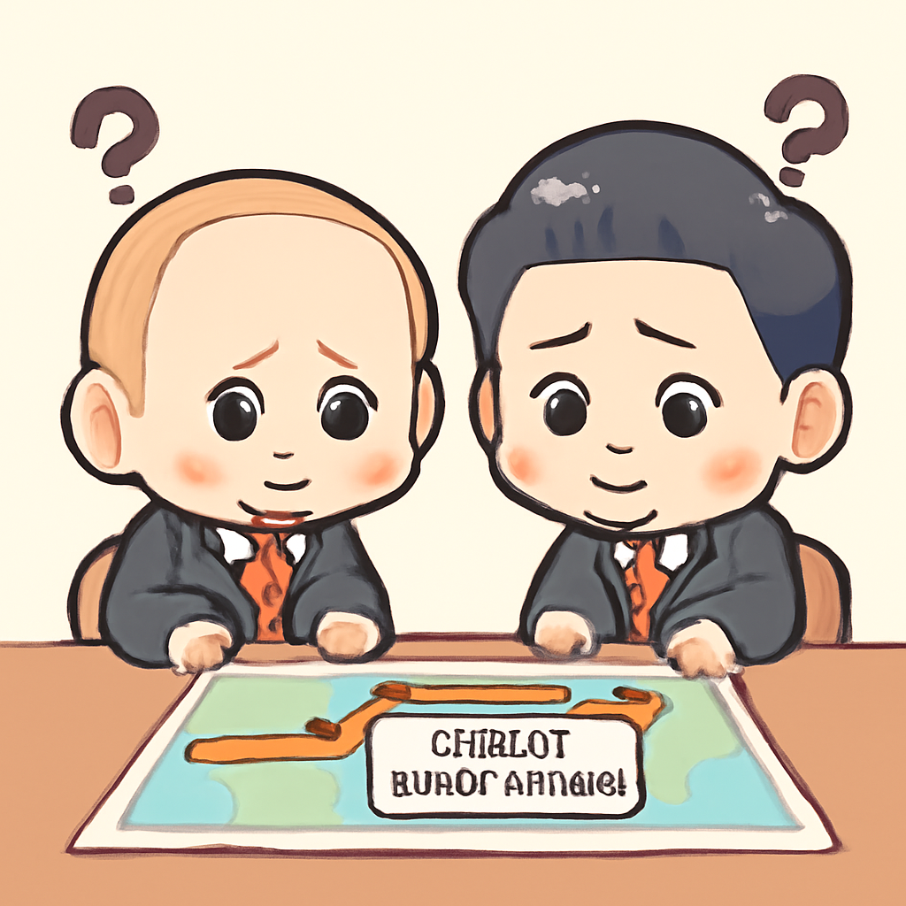

其一 · 古巴哈瓦那 · 卡斯特羅面臨謀殺指控
美國指控古巴卡斯特羅與他人謀殺
在古巴哈瓦那，美國當局對卡斯特羅及其五名同夥提出了謀殺及陰謀的指控，指控他們在1996年擊落兩架飛機，造成美國國民死亡。這起事件讓古美關係再度緊張，或許會引發更多外交風波，真是「老祖宗」又要出來攪局了。
🔗 原始新聞 ↗
2026-05-21 · 以古觀今，以笑抗愁
美國指控古巴卡斯特羅與他人謀殺
在古巴哈瓦那，美國當局對卡斯特羅及其五名同夥提出了謀殺及陰謀的指控，指控他們在1996年擊落兩架飛機，造成美國國民死亡。這起事件讓古美關係再度緊張，或許會引發更多外交風波，真是「老祖宗」又要出來攪局了。
🔗 原始新聞 ↗
普京與習近平會談卻未簽署管道協議

在俄羅斯莫斯科，普京和習近平的會談讓兩國顯得如膠似漆，但最重要的能源管道協議卻未能簽署，似乎是個「空歡喜」。這次會談凸顯了兩國之間的想法不一致，未來的合作前景依然渺茫，真是「有心無力」啊。
🔗 原始新聞 ↗
東京青少年疑似受新犯罪網絡影響
在東京，四名青少年涉嫌殺害一名女性，警方懷疑他們可能受到一種新型犯罪網絡的指導。這起事件不僅讓人擔憂青少年犯罪問題，也讓社會對這種新型犯罪手法充滿警惕，真是「青少年不懂事」的悲劇。
🔗 原始新聞 ↗
世衛組織警告埃博拉疫情升溫
全球衛生組織在最新報告中指出，埃博拉疫情持續升高，死亡人數已達139人，疫苗研發可能需要九個月。這讓人不禁想問，為什麼這種老掉牙的病毒還能再度翻身？希望這次能有更快的反應，不要讓疫情的故事成為「老生常談」！
🔗 原始新聞 ↗
中國與美國會談後確認波音訂單
在北京，中國政府確認將購買200架波音飛機，這一消息在美中貿易緊張的背景下顯得格外重要。這不僅是對美國的一次回應，也可能是兩國關係緩和的信號，真是「飛」得越高，心情越好！
🔗 原始新聞 ↗